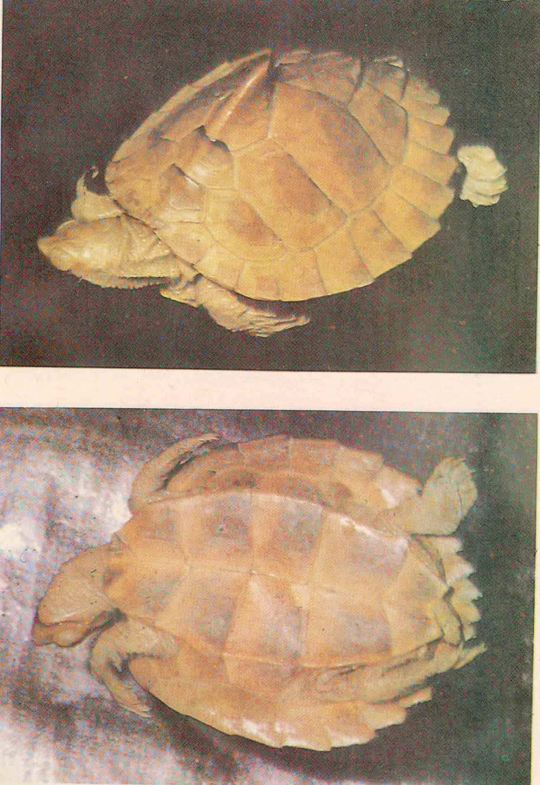

|
Digitized
Inventory of Animal Resources: Reptilia |
Kachuga silhetensis ( Jerdon 1870 )
Taxonomic Details
----- Scientific Name
----- Classification
----- Synonyms
-----
Common Names
Other Biological Details
----- Habit and Habitat
----- Distribution
---------- Extent of Occurrence
---------- Area of occurrence
---------- Altitude
---------- Population
-----
Conservation Status
----- Diagnostic Features
----- Breeding system
Miscellaneous Information
Literature
Scientific Name : Kachuga silhetensis ( Jerdon 1870 )
Family :
Classification:
Kachuga silhetensis ( Jerdon 1870 )
Synonyms:
Common Names:
Assam
Saw-back Turtle
Other Biological Details Threat
Data not available
Fully aquatic inhabits stagnant and slow running water in the hill stream with plenty of aquatic vegetation. Mainly herbivorous
Available in Garo, Khasi and Naga Hills of Northeastern India
Extend of
Occurrence
Area of occurrence: States of Assam, Meghalaya and Nagaland
Altitude:
Population:
Conservation status: Insufficiently known, rare.
Size
:
Small and rare species, hardly reaches a length of 18 cm.
Body : Head moderately small, snout pointed, shorter than the orbit and projecting much beyond the lower jaw. Skin of the posterior portion of the head is feebly divided. Upper jaw is hooked.
Limbs :
Limbs are with fully and broadly webbed digits and have transversely
enlarged scales.
Tail :
Tail short and remains same in adult as well as juvenile.
Carapace :
Elevated, with a prominent
vertebral keel which is abruptly transformed into a tough backwardly projecting
spike at the posterior margin of the third vertebral shield. Posterior margin of
the carapace is very strongly
serrated. Margin
shields are 26 in number. Plastron
is as long as carapace, angulate laterally, truncate anteriorly, hind plastral
lobe is smaller than the shell opening, notched posteriorly, its length slightly
less than the width of the bridge.
Breeding system:
Nesting : Not much is known about the breeding habits, except that it lays elongated /oval eggs.
